On the first of December, Ted-E-Bear finds a gold envelope on his doormat. Inside is a piece of gold paper and a note: “Keep me safe. Bring me to the Great Oak on Christmas Eve.” Every morning after that, another friend gets one. Who is sending them? And what are the pieces for? Read one page a day, and look for the clues.
25 printed pages · 6.0 MB · A4 or US Letter. Download PDF · Open PDF to printOpens in a new tab. Use the PDF viewer's Print control.
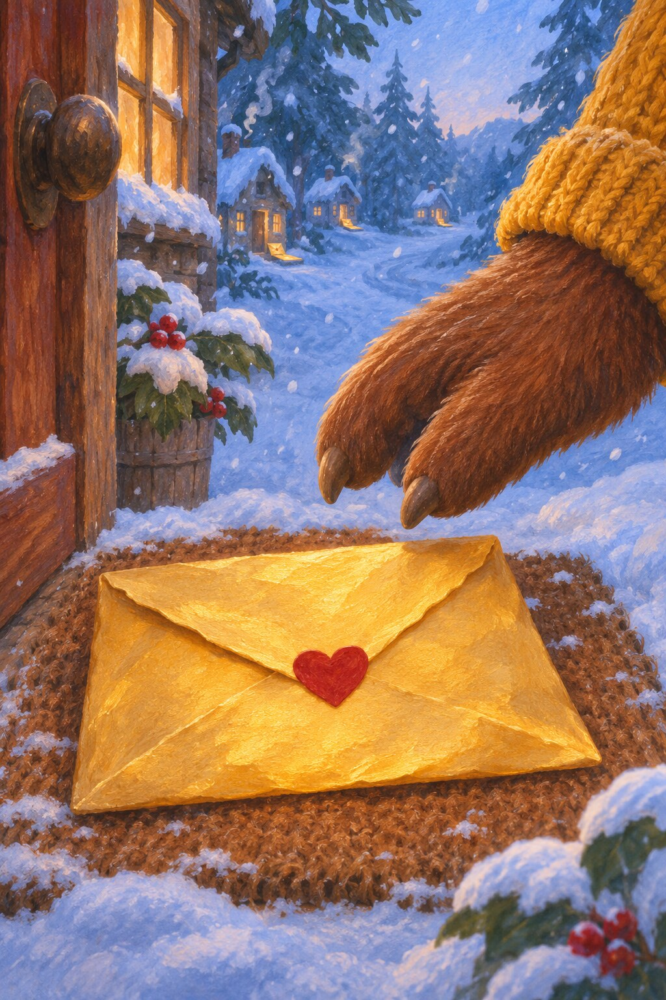
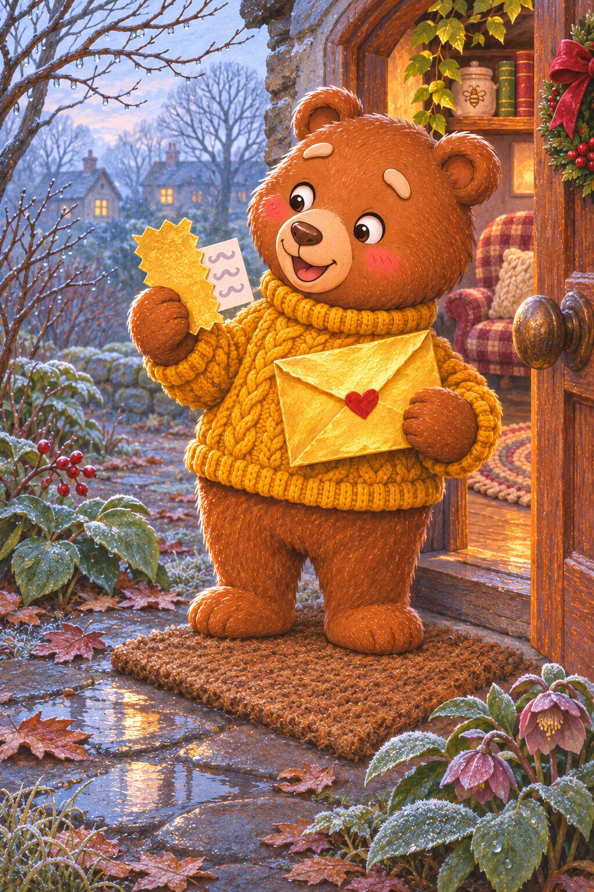
Page 1 of 24
1 December
At eight o’clock in the morning, Ted-E-Bear found a gold envelope on his doormat. It had no stamp. His name was on the front, in big, wobbly letters.
Inside was a piece of shiny gold paper with zigzag edges, and a note.
Piece 1. Keep me safe. Bring me to the Great Oak on Christmas Eve.
“Who sent this?” said Ted.
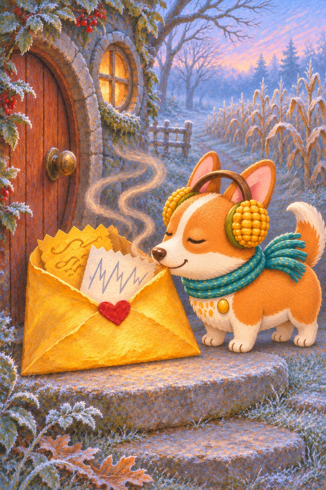
Page 2 of 24
2 December
The next morning, Corgi-on-the-Cob got one too.
He sniffed the gold envelope. He sniffed it again.
“Cocoa,” he said. “This letter smells of hot cocoa.”
Piece 2. Keep me safe. Bring me to the Great Oak on Christmas Eve.
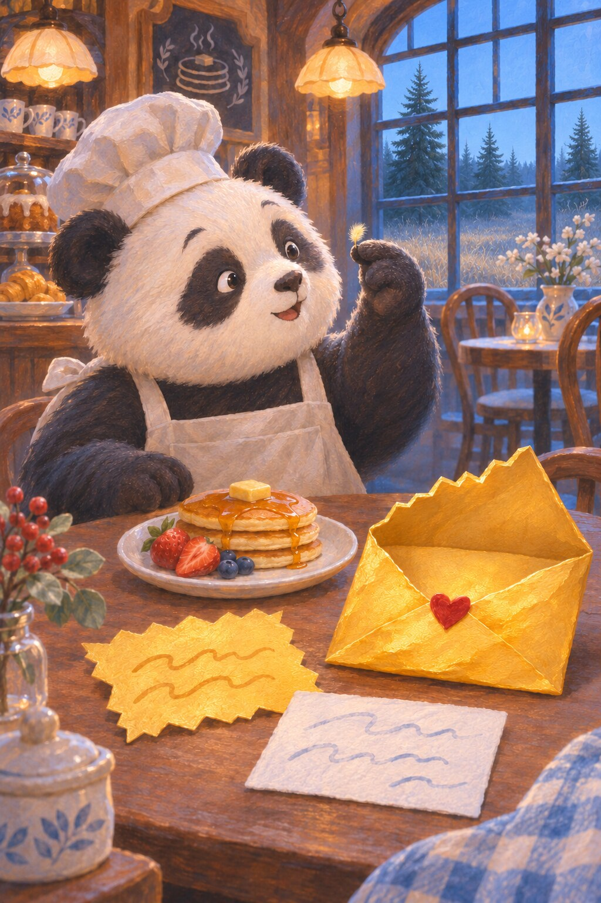
Page 3 of 24
3 December
Panda-Cake opened his envelope at the Breakfast Bistro, over a plate of pancakes.
Out fell a gold piece, a note, and one tiny yellow feather, as soft as fluff.
Panda-Cake put the feather carefully in his apron pocket. “A clue,” he said.
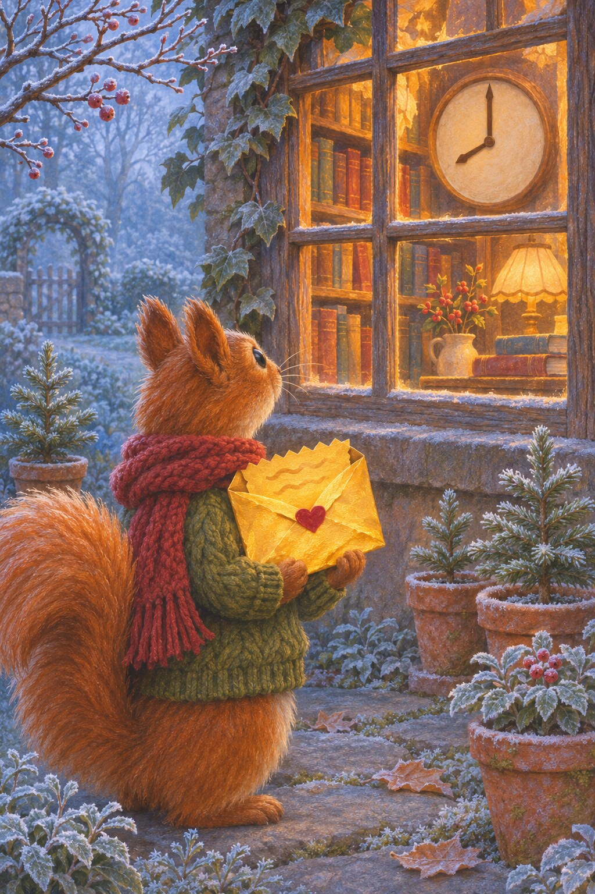
Page 4 of 24
4 December
Nutmeg’s envelope came while she was choosing a Christmas tree.
She looked at the library clock. Eight o’clock exactly.
“Ted’s came at eight,” she said. “Corgi’s came at eight. Panda-Cake’s came at eight. Somebody is very good at telling the time.”
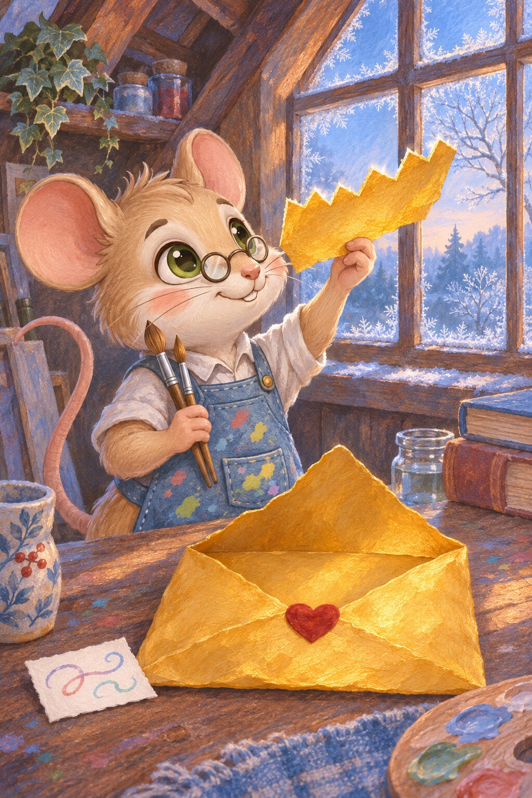
Page 5 of 24
5 December
Vincent Van Mouse held his gold piece up to the light.
“Look at these edges,” he said. “Zig, zag, zig, zag. Somebody cut this with zigzag scissors. The kind that are safe for small paws.”
Piece 5. Keep me safe. Bring me to the Great Oak on Christmas Eve.
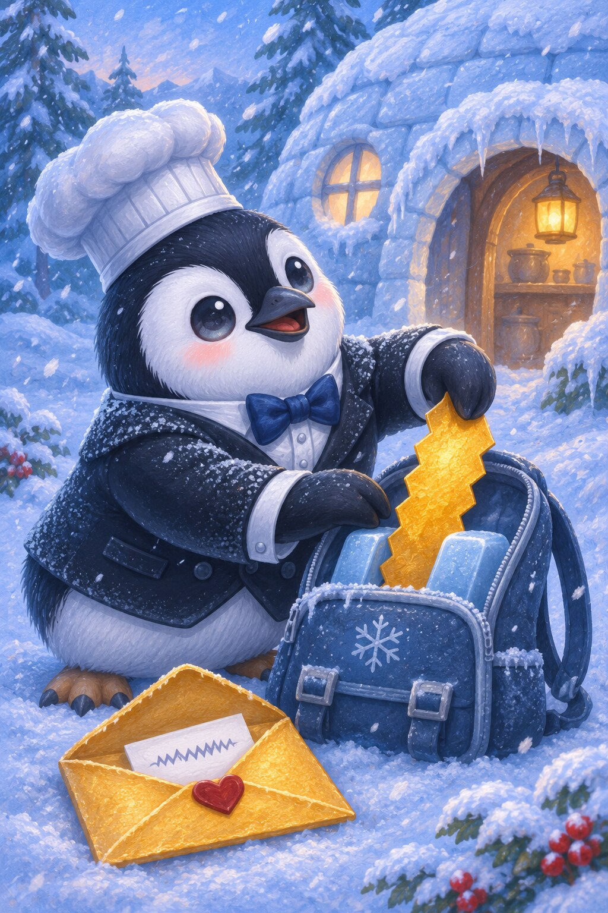
Page 6 of 24
6 December
Sub-Zero’s envelope came with the first snow.
He put his gold piece in his cooler backpack, between two Chilly-Facts, to keep it safe and flat.
“Whoever you are,” he called out into the snowflakes, “I’m keeping it safe!”
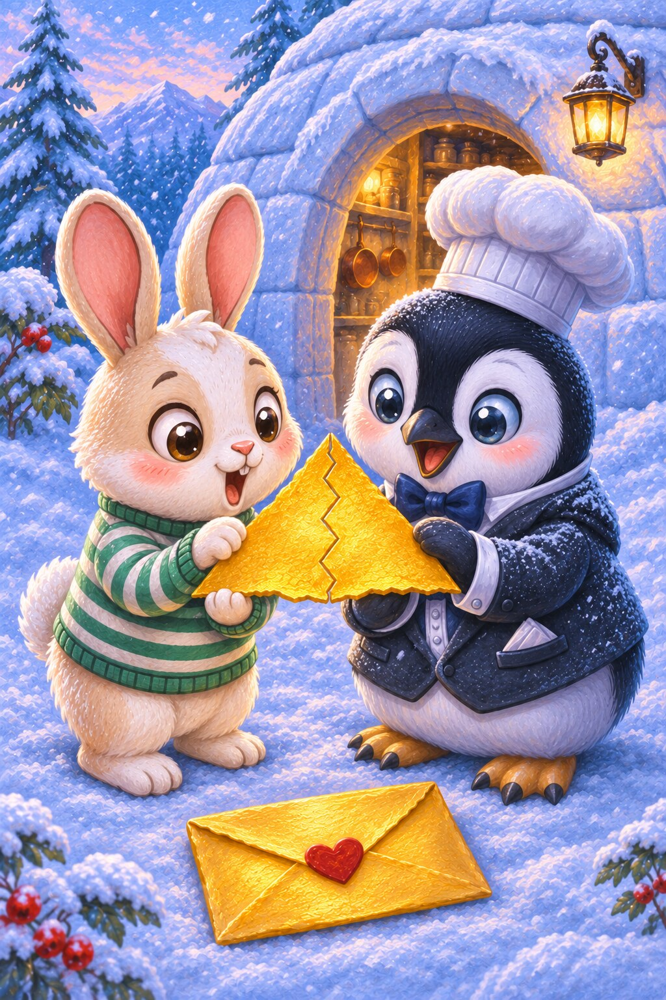
Page 7 of 24
7 December
Hop-Tart got piece 7. He hopped straight round to Sub-Zero’s house to compare.
They held their two gold pieces side by side. They wiggled them. Click.
They fitted together.
“They’re pieces of the same thing!” said Hop-Tart. “But what thing?”
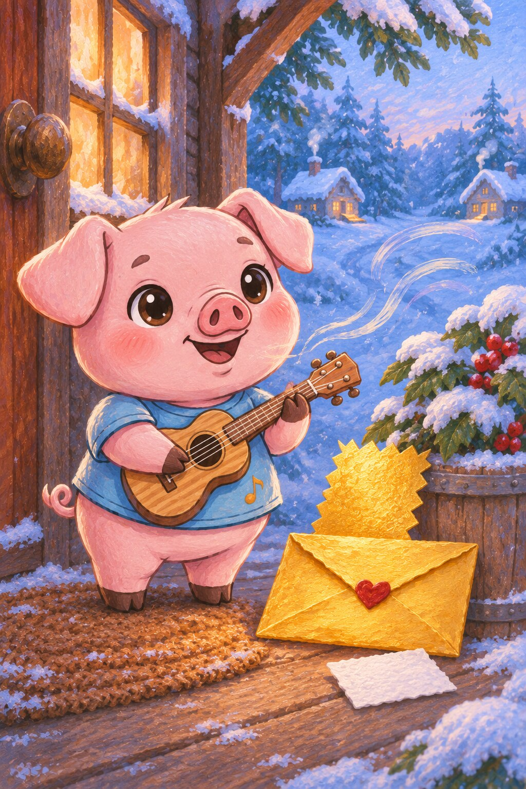
Page 8 of 24
8 December
Pork-ulele got piece 8, and wrote a song about it on his ukulele.
Who sends the letters, gold and bright?Who comes at eight and leaves no name?Who’ll be at the Great Oak, Christmas night?
He wasn’t sure about the ending. He kept playing anyway.
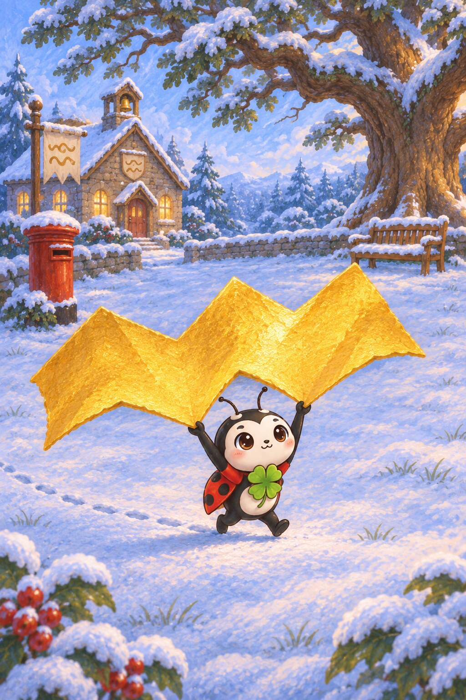
Page 9 of 24
9 December
Luckybug’s gold piece was bigger than she was.
She carried it home over her head, like a little golden sail, all the way across the green.
Piece 9. Keep me safe. Bring me to the Great Oak on Christmas Eve.
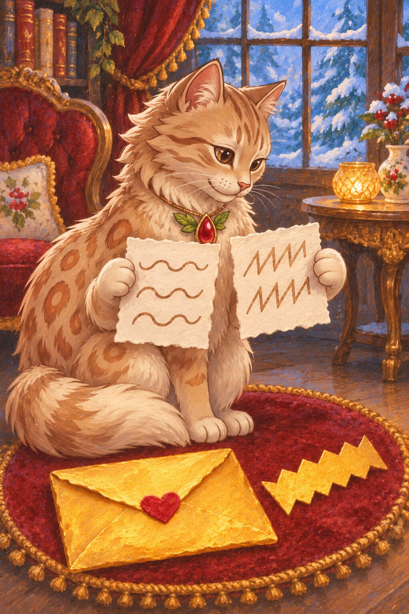
Page 10 of 24
10 December
Fe-Line-Mignon read her note very slowly, the way she read poetry.
“Ted showed me his note,” she said. “The writing was round and wobbly. Mine is tall and wobbly. These letters were written by two different paws.”
Two senders. Taking turns.
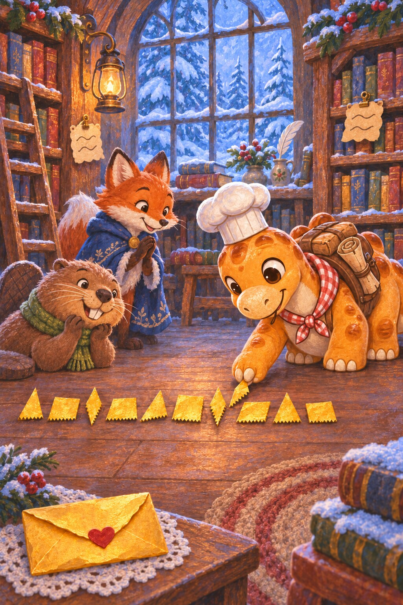
Page 11 of 24
11 December
Dough Mino asked everybody to bring their pieces to the library. He laid them out in a long, neat row on the floor.
Eleven pieces. Lots of them had a sharp point at one end.
“Points,” said Dough Mino. “Lots of points. What has lots of points?”
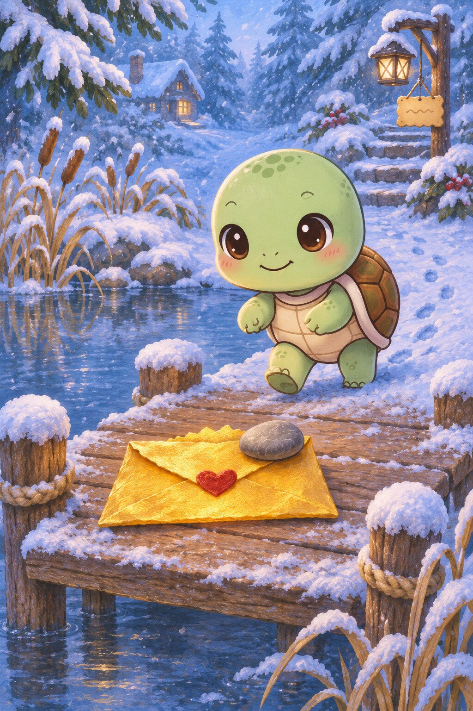
Page 12 of 24
12 December
Shelly-Pop’s envelope was waiting on the little jetty at the duck pond, held down with a pebble so it couldn’t blow away.
“Whoever left this,” said Shelly-Pop, “is very careful.”
Piece 12. Keep me safe. Bring me to the Great Oak on Christmas Eve.
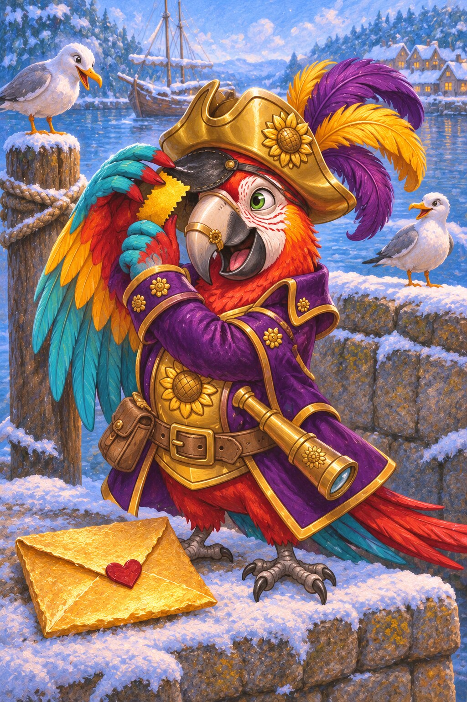
Page 13 of 24
13 December
Polly Roger’s envelope came all the way to the harbour.
“Arrr,” she said. “A treasure map? No. A treasure piece!”
She tucked it under her eye patch for safekeeping, which was not a good idea, and then into her coat pocket, which was.
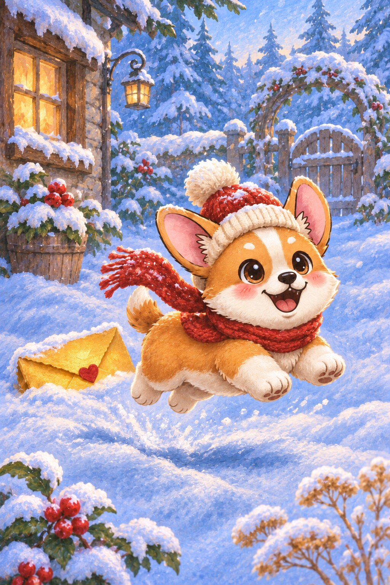
Page 14 of 24
14 December
Biscuit-Bouncer was so excited about piece 14 that he bounced three times round the garden before he opened it.
Then he had to go and find it in the snow.
Piece 14. Keep me safe. Bring me to the Great Oak on Christmas Eve.
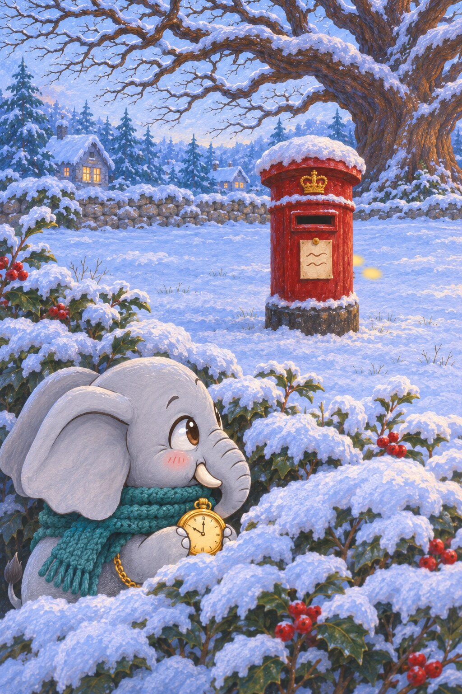
Page 15 of 24
15 December
Tick-Tusk got piece 15. She took out her pocket watch.
“I’ve been watching the post box,” she said. “Every morning, just before eight o’clock, somebody small posts a gold envelope. Too quickly to see who.”
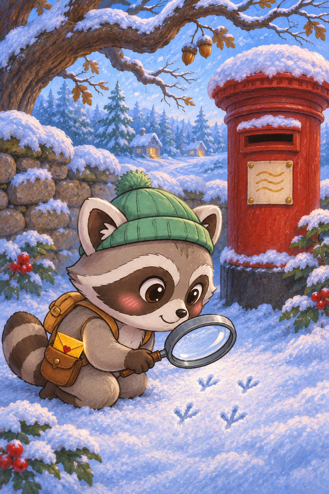
Page 16 of 24
16 December
Snack-Spector got piece 16, and went straight to the post box with his magnifying glass.
In the snow were two sets of tiny footprints, side by side. Three thin toes each. Like a small bird’s.
“Two small birds,” said Snack-Spector, “who smell of cocoa, leave yellow fluff and are very good at telling the time.”
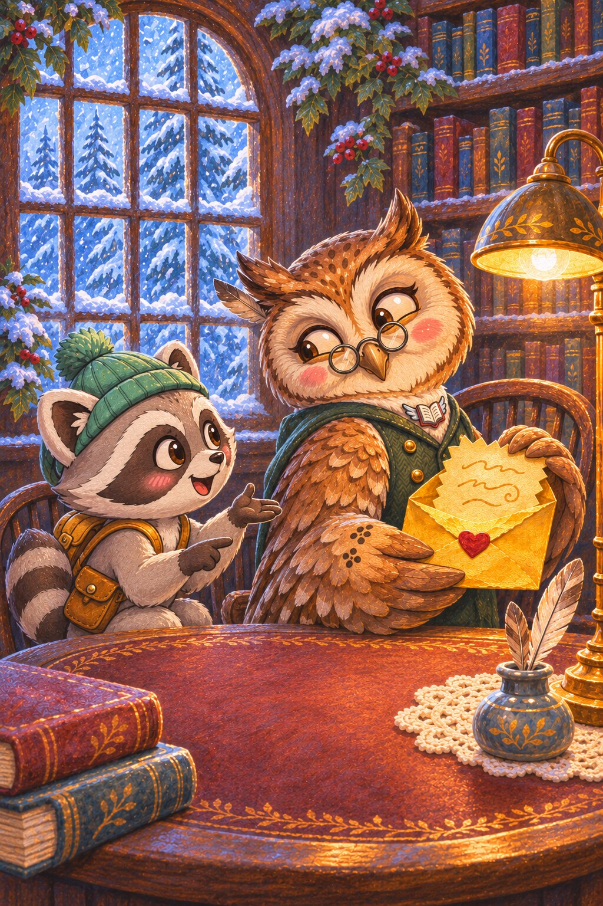
Page 17 of 24
17 December
Professor Hooten opened his envelope in the library and read it twice.
Snack-Spector told him all the clues.
Professor Hooten turned his head almost all the way round, and smiled, and said nothing at all.
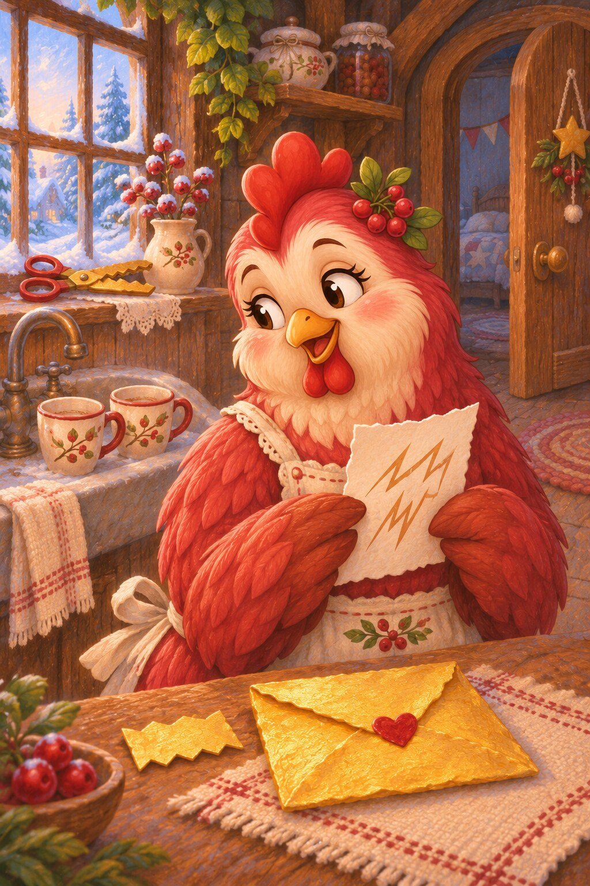
Page 18 of 24
18 December
Hen-Berry got piece 18 at her kitchen table.
She read the note. She looked at the two empty cocoa mugs by the sink. She looked at the zigzag scissors on the windowsill.
She smiled, just like Professor Hooten, and said nothing at all.
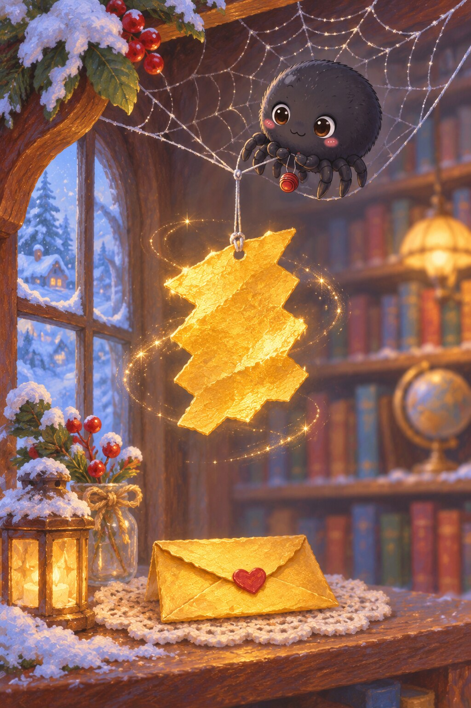
Page 19 of 24
19 December
Spinnerella’s envelope was very big and Spinnerella was very small.
So she spun a silver thread round her gold piece and hung it in the corner of her web, where it turned and glittered in the light.
Piece 19. Keep me safe. Bring me to the Great Oak on Christmas Eve.
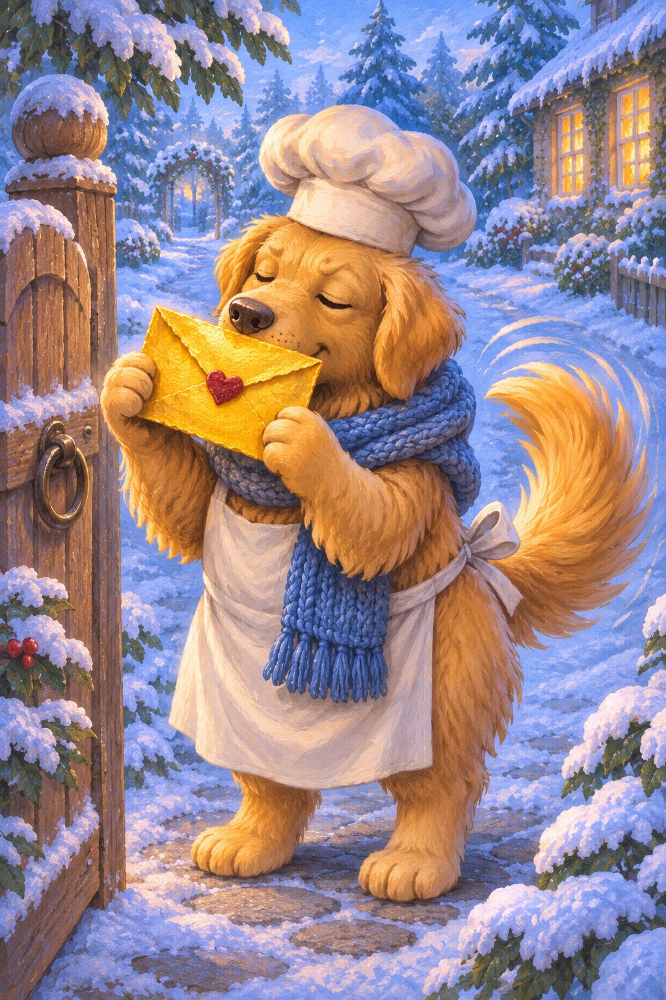
Page 20 of 24
20 December
Bark-B-Q’s piece came on a frosty morning. He sniffed it, like Corgi had.
“Cocoa,” he agreed. “And a little bit of hay. Like a henhouse.”
He wagged. He was getting close.
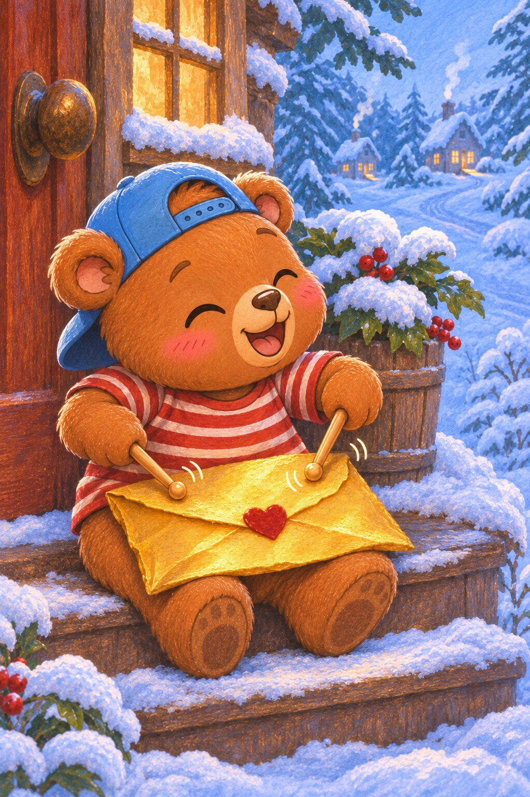
Page 21 of 24
21 December
Honey-Beats got piece 21. She tapped the envelope with her drumsticks. Tap, tap. Tap, tap.
“Two paws,” she said. “Taking turns. Like a drum and a bell.”
Everybody in the village was guessing now.
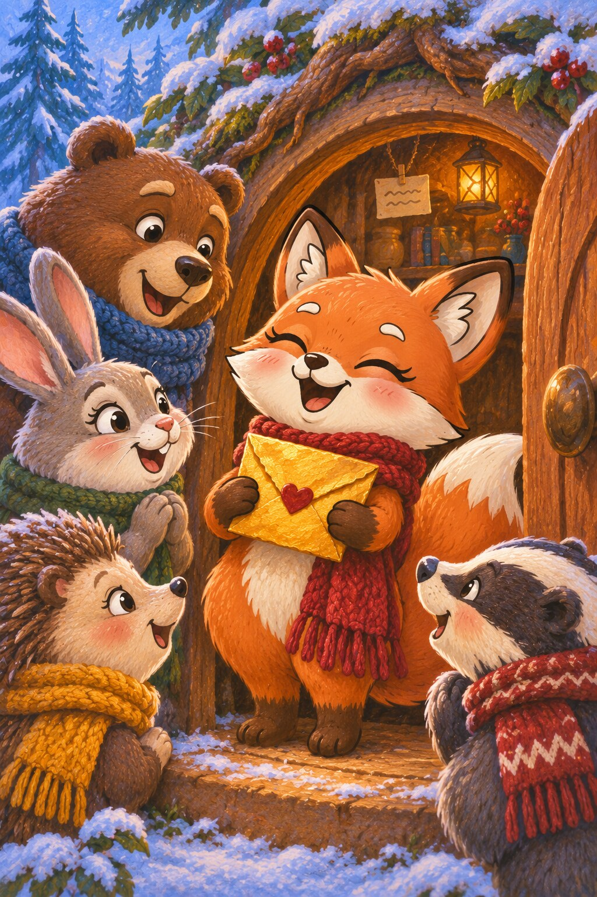
Page 22 of 24
22 December
Foxy-Lox read her note and laughed.
“I know who it is,” she said.
“Who?” said everybody.
“I’m not telling,” said Foxy-Lox. “It’s much more fun to find out.”
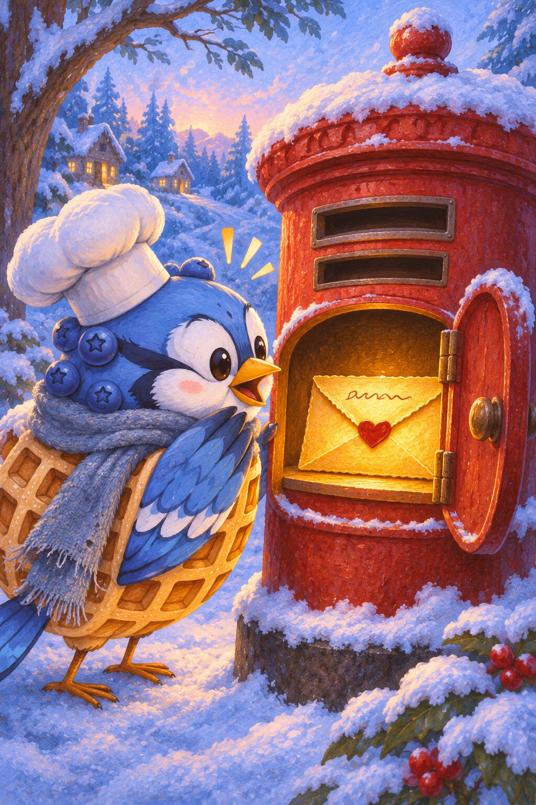
Page 23 of 24
23 December
On the twenty-third, Belgian-Waffle went to the post box to collect the morning letters, the way he always did.
There was only one gold envelope inside. And it had his own name on the front.
“For me?” said Belgian-Waffle. Nobody ever sent him anything.
Piece 23. Keep me safe. Bring me to the Great Oak on Christmas Eve.
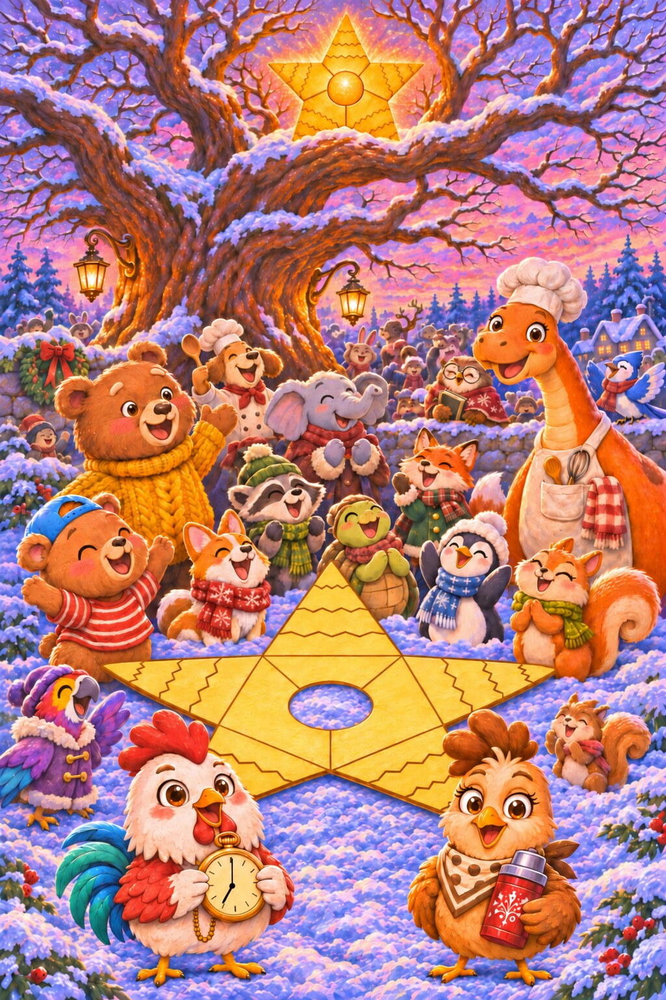
Page 24 of 24
24 December: Christmas Eve
As the sun went down, everybody came to the Great Oak, holding their gold pieces.
Dough Mino laid them out in the snow. Points. Edges. Corners. Click, click, click. It was a star, as big as Ted-E-Bear. But in the very middle, there was a hole.
Out from behind the Great Oak came two small chicks, one holding a flask of cocoa and one holding a watch.
“It was us,” said Coop-Accino. “We cut a star into twenty-four pieces,” said Cluck O’Clock, “so everybody could bring a piece of it.”
“But who has the middle?” said Ted.
The twins looked at each other. Then they looked straight out of the page, at you.
“You do,” they said.
Put your hand on the middle of the star.
There. Now it’s whole. And together, everybody lifted it up to the top of the Great Oak, where it shone over the whole village all Christmas night.
The end · Thank you for reading
Share another story
A SnackPack original picture book, free to read together.